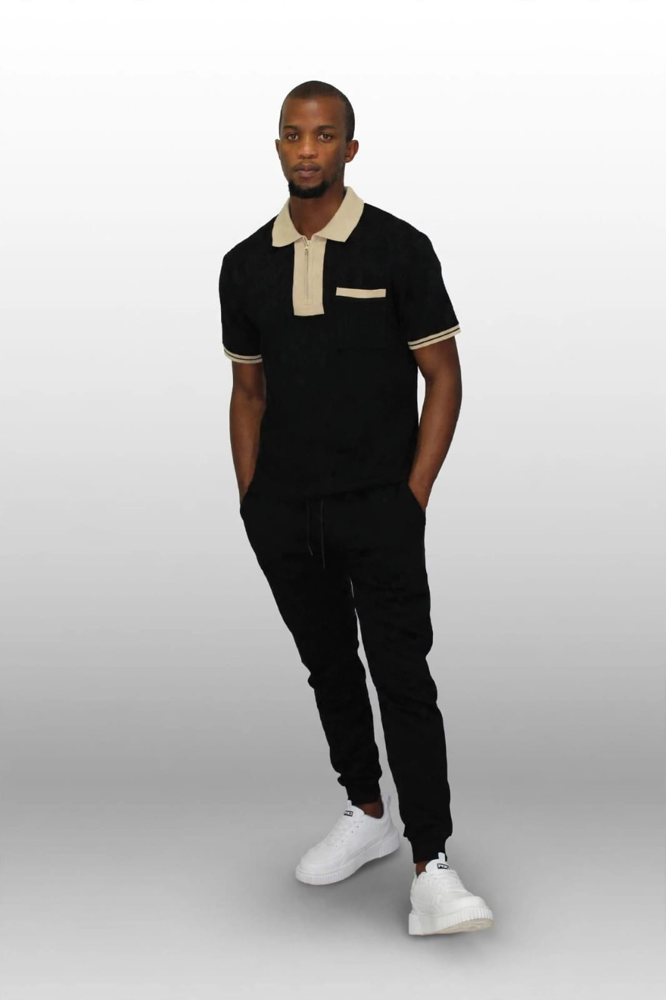

About Me

Hi, I'm Lindokuhle Mchilwa
I am an Advanced Diploma Student in ICT in Applications Development at Walter Sisulu University. I grew up in the small beautiful town of Libode in the Eastern Cape, South Africa.
My passion for technology drives me to constantly learn and build innovative solutions. I am currently on a journey to become a Full-Stack Developer and Tech Entrepreneur, already pursuing my dreams by developing web applications and exploring the world of software engineering.
| Full Name | Lindokuhle Mchilwa |
| Hometown | Libode, Eastern Cape |
| Province | Eastern Cape, South Africa |
| Programme | Advanced Diploma in ICT in Applications Development |
| Institution | Walter Sisulu University |
| Career Goal | Full-Stack Developer & Tech Entrepreneur |
More About My Journey
I started my journey in technology during high school where I discovered my passion for coding. Since then, I have been dedicated to learning and growing as a developer. I believe in continuous learning and I'm always eager to take on new challenges that push me to grow.
When I'm not coding, I enjoy exploring new technologies, contributing to open-source projects, and mentoring others who are starting their journey in tech.